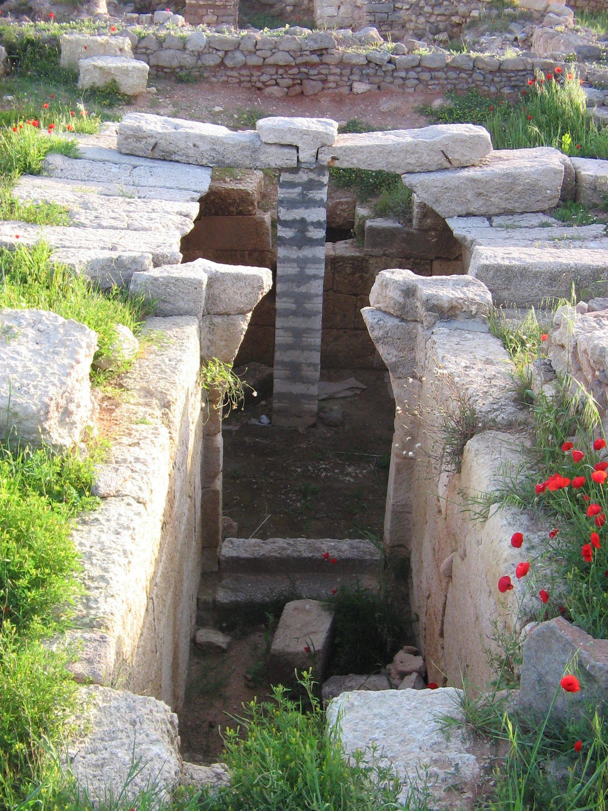

Ugarit (Ras Shamra City)

- Find Name
- Ugarit (Ras Shamra City)
- Description
- A cosmopolitan Late Bronze Age port city on the northern Syrian coast, at its height c. 1450-1200 BC, ruling a kingdom of about 2,000 sq km with the best natural harbour on that coast at Minet el-Beida. Excavations under Claude Schaeffer uncovered a royal palace of about 90 rooms around eight courtyards, with gardens and archives; residential and craftsmen's quarters; and on the acropolis two temples — to Baal and to Dagan — with the high priest's house between them. The city was destroyed around 1200 BC in the Bronze Age collapse. This entry covers the city, palace and temples only; the Ugaritic Tablets have their own entry.
- Historical Period
- Neolithic–Late Bronze Age
- Evidence Class
- Contextual
- Interpretations
- The identification of Ras Shamra with Ugarit is certain, based on thousands of documents from the site naming the city. Debate concerns the cause of its destruction around 1200 BC (Sea Peoples, earthquake, famine, internal struggle, or a combination) and, in recent years, the condition of the site during the war in Syria. No biblical event is located at Ugarit, and none is claimed here.
- Alternative Names
- Ras Shamra; Ugaritic City; Minet el-Beida Harbour City
- Related Books
- Scripture Illuminated
- Biblical Significance
- Ugarit is never named in the Bible, yet it explains the Bible's world more than most named cities: its Baal Cycle, written in the very language family of Hebrew, is the Canaanite religion Israel was warned against, in its own words. Walking its palace courts and temple acropolis shows what 'the Baals' of Judges and Kings actually looked like as a state religion — not a vague idolatry, but a liturgy, a priesthood and a king's court.
- Artifact Date
- c. 6000 BC - c. 1200 BC (city; Late Bronze Age palace and temples c. 1450-1200 BC)
- Current Location
- In situ, Ras Shamra, Syria
- Date Discovered
- 1928 (tomb accidentally opened); 1929 onwards (Schaeffer; joint French-Syrian mission from 1999)
- Discovery Location
- Ras Shamra, about 11 km north of Latakia, Syria
- Timeline Era
- Primeval / Patriarchs
Awaiting Review Not yet checked against scholarly sources. Treat its claims as provisional until this entry is reviewed. About verification
Last reviewed: not yet reviewed